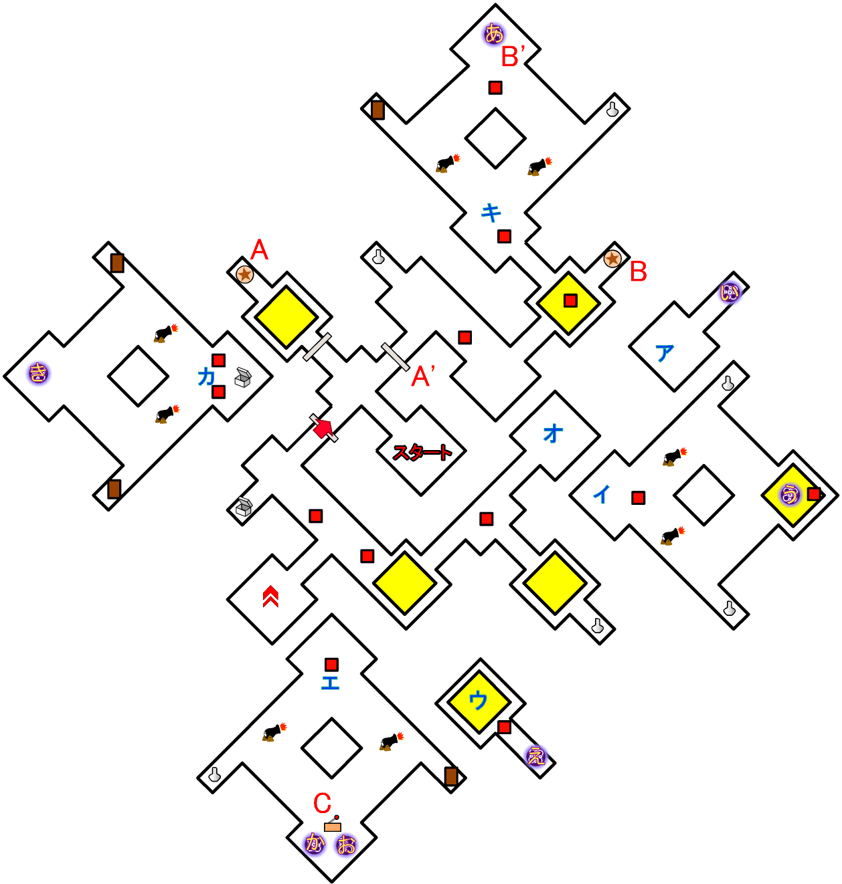
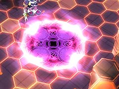

パッチ(1.0.0.1 以降)をあてれば、「グラインドギア」に乗ることで通過できます。

出現した全ての敵を倒すと、B' 地点の扉が開きます。
C' 地点の罠は吸い寄せる力が強力で、通常の方法では確実に吸い込まれてしまうので、C 地点のレバーをつかい罠の動作を止め、「グラインドギア」に乗って素早く通過してください。
敵も大砲も穴に落とせば倒せるので、主人公がわざと落とし穴の上に乗り、敵を落として倒すのも手です。
目次 > ゲームについて > 日本Falcom 攻略 > ZWEI II > ダンジョン一覧 > 螺旋中枢
らんの眼
ZWEI II (ツヴァイ 2、ZWEI II Plus)
| 概要 | 情報 | 攻略チャート |
| フード交換 | ペットについて | ボス戦 |
| 敵キャラ一覧 | ハンターランク | G-コロッセオ |
| アイテム一覧 | ガジェット一覧 | トレジャー一覧 |
| ダンジョン一覧 | クリアデータ特典 | Plusの追加要素 |
| ZWEI II攻略へ | 目次へ戻る |
| 第1 階層 |

|  | この階層には、いくつかのワープゾーンがあります。 マップ上のひらがな・カタナカは、「あ」のワープゾーンから「ア」地点へ移動することを意味しています。 |
| A 地点のスイッチを押すと、A' 地点の扉が開きます。 | |
| B 地点のスイッチを押すと、B' 地点にワープゾーンが出現します。 | |
| C 地点のレバーを動かすと、ワープゾーン「お」とワープゾーン「か」が交互に出現します。 |
| 第2 階層 |
| A 地点にあるように、この階層から主人公達を吸い寄せ穴に落とす罠が出現します。 ほとんどのものは穴のフチに立たなければ、移動を押し続けることで罠からは逃れられますが、「アンチトラップ」でも落下ダメージは防げませんし、常に近づかないようにした方が無難です。 |
|
| B 地点のスイッチを押すと、B' 地点にあった罠がB'' 地点へ移動します。 | |
| C 地点のスイッチを押すと、C' 地点にあった罠がC'' 地点へ移動します。 | |
| D 地点のスイッチを押すと、D' 地点の罠の動きが止まり、近づいても吸い寄せられなくなります。 |
| 第3 階層 |
| この階層には大きな落とし穴があります。 パッチ(1.0.0.1 以降)をあてれば、「グラインドギア」に乗ることで通過できます。 |
|
|
B 地点へ移動すると、部屋の扉が閉まり、敵が複数出現します。 出現した全ての敵を倒すと、B' 地点の扉が開きます。 |
| C 地点のレバーを動かすと、C' 地点の罠が一時的に動かなくなります。 C' 地点の罠は吸い寄せる力が強力で、通常の方法では確実に吸い込まれてしまうので、C 地点のレバーをつかい罠の動作を止め、「グラインドギア」に乗って素早く通過してください。 |
|
| D 地点、D' 地点には落とし穴の上に敵や大砲がいます。 敵も大砲も穴に落とせば倒せるので、主人公がわざと落とし穴の上に乗り、敵を落として倒すのも手です。 |
| 概要 | 情報 | 攻略チャート |
| フード交換 | ペットについて | ボス戦 |
| 敵キャラ一覧 | ハンターランク | G-コロッセオ |
| アイテム一覧 | ガジェット一覧 | トレジャー一覧 |
| ダンジョン一覧 | クリアデータ特典 | Plusの追加要素 |
| ページの上部へ | ZWEI II 攻略へ | 目次へ戻る |